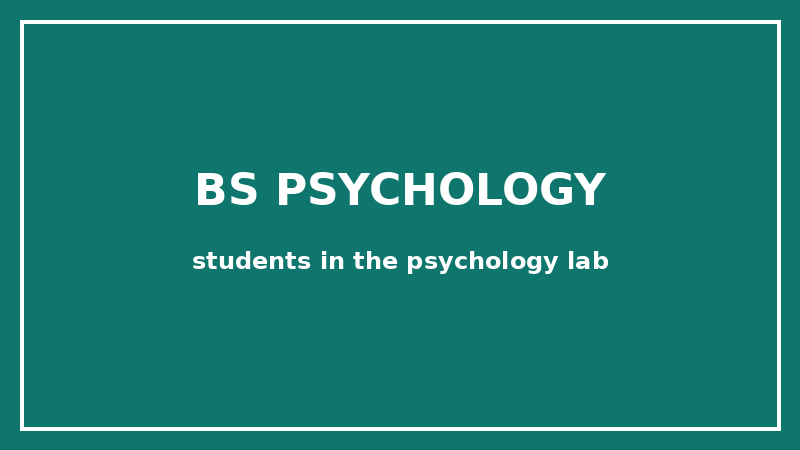

BS Psychology
BS Psychology is a four-year program covering human behavior, research methods and counseling basics.

Graduates may pursue careers in counseling, research and human resources.
BS Psychology is a four-year program covering human behavior, research methods and counseling basics.

Graduates may pursue careers in counseling, research and human resources.